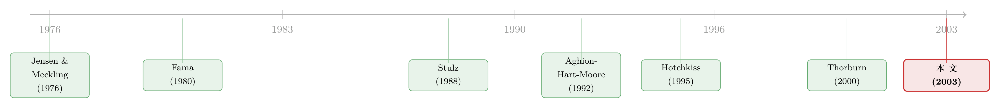

破产就拍卖、CEO 就下岗——可正是这条「硬规矩」，让他提前收起了赌性
本文读的是 Eckbo & Thorburn (2003, Journal of Financial Economics)：在瑞典，企业一旦申请破产，CEO 的雇佣合同立即失效，公司被强制送进公开拍卖。批评者担心这套「硬约束」会逼着经理在申请前疯狂「赌一把」（风险转移）；可两位作者反过来论证——正因为控制权私利只有在「公司活下来、且自己被买家重新雇用」时才能保住，CEO 反而有动机提前投保守。其唯一性推论是：再雇用概率随控制权私利上升，而数据支持了这一点。同时，破产对 CEO 的劳动力市场惩罚极其残酷——相对同行，中位数收入下降 −47%。
1 一条「硬到没有余地」的破产规矩
先把场景摆出来。在美国，破产是 Chapter 11——管理层多半留任，债务人继续掌舵，慢慢和债权人谈一个重组方案。但在 1988–1991 年的瑞典，破产是另一副样子：你一旦申请破产，所有债务停止偿付，法院指派一名托管人 (trustee)，然后把整个公司丢进一场公开现金拍卖 (open auction)。竞买人既可以一块块地买走资产（拆散清算），也可以把公司当成一个持续经营体 (going concern) 整体买下。出价必须是现金，所得严格按绝对优先权 (absolute priority) 分配。整个过程平均只要 2 个月。
最关键的一条：申请破产，自动终止 CEO 的雇佣合同。没有谈判，没有缓冲。无论你手里攥着多少股权，都拦不住这场拍卖。
这条规矩看上去很「干净」——它把一个本该久拖不决的破产程序，压缩成一场两个月结束的拍卖。可问题恰恰出在这份干净里。
Aghion、Hart 与 Moore（1992）、White（1996）、Hart（2000）这些破产理论的大家都提出过同一个担忧：当破产意味着 CEO 必然下岗，那么在申请破产之前，这位即将「上船跳水」的经理还有什么理由替公司珍惜资产？股票的有限责任本就给了股东「拿别人的钱去赌」的激励（这是 Jensen 和 Meckling 1976 年的经典观察）；而一套把管理层逼到墙角的硬约束，岂不是火上浇油，诱发过度的风险转移 (risk shifting)？
这是一个非常自然、也非常吓人的预言。本文要做的事，就是把这个预言翻过来。
2 反转：私利不是火上浇油，而是一盆冷水
接着，一个自然的问题是：风险转移到底是谁在做？
教科书里的风险转移，是「股东」的故事——有限责任让股东只承担上行、不承担下行，于是偏爱高方差的烂项目。但 Eckbo 和 Thorburn 提醒我们：风险转移需要 CEO 亲自动手。而 CEO 和股东，在「深度困境」这件事上，利益其实并不一致。
为什么？因为 CEO 手里握着一样股东没有的东西——控制权私利 (private benefits of control)。这是一类无法写进合同、也无法转让的好处：藏住自己的无能与偷懒、社区里的体面、各种在职消费，乃至各种形式的财富侵占。它的特点是几乎完全属于公司、且只能通过买下控制权来获得。
于是关键的因果链出现了：申请破产后，CEO 想保住这份私利，只有一条路——公司作为持续经营体活下来，且拍卖里的买家把她重新雇回去。只要公司被拆散清算，CEO 的位子就没了；只要买家换了别人来坐，私利也归零。
这正是 CEO 和股东的分歧所在：股东在「有限责任」下只盯着公司存活那一端的上行收益，根本不在乎破产清盘那几种状态；而 CEO 格外珍视「持续经营出售」这个中间状态——因为那是她唯一能保住私利的状态。
于是反转出现了：「赌一把」固然可能让股东的股权期权变得更值钱，却同时抬高了公司被拆散清算的概率，也就抬高了 CEO 永远失去私利的概率。 一个理性的、看重私利的 CEO，宁可投得保守一点，去对冲掉那个最糟的清算结局。私利越大，这盆冷水越凉。
这就是本文的唯一核心，作者称之为「管理层保守主义 (managerial conservatism)」。它和传统上靠债务契约 (Smith and Warner, 1979)、靠可转债 (Green, 1984) 来压制风险转移的思路是互补的——后者靠外部约束，前者靠 CEO 自己内生的动机。更妙的是，作者证明：即使 CEO 持有大量股权，这个保守动机依然成立。
3 模型：把「保守」从一个三状态的赌局里解出来
本文有一个极简但极漂亮的模型，值得一步步拆开。它的全部目的，是把上面那段直觉变成一个可以求偏导的不等式。
设定。 一家公司有面值 F 的债务下期到期。它只有三样资产：I 元现金，外加两个都需要今天投入 I 的项目——低风险的 L 和高风险的 H。下期的现金流落在三种状态 \(C\in\{0,\,c,\,2c\}\)，其中 \(c>I\)。再令 \(2c>F>c\)，于是公司在低状态（清算）和中间状态（持续经营出售）都会破产，只有高状态才偿得起债、平安无事。
两个项目的概率分布是（这是论文的式 (1)）：
$$ \Pr[C]_i= \begin{cases} [\,p,\;1-2p,\;p\,] & i=L,\\[4pt] [\,p+a,\;1-2p-a-b,\;p+b\,] & i=H. \end{cases} $$
令 \(a>b>0\)。这一条很要紧：它让 H 相对 L 方差更高、而期望更低。算一下净现值：\(NPV_L=c-I>0\)，且 \(NPV_L-NPV_H=(a-b)c>0\)。换句话说，在这个设定里，「赌一把」恰恰等于去选那个价值更低的项目——风险转移不是中性的，它在毁灭总价值。
股东视角。 有限责任让股东无视破产状态，只数高状态的钱：
$$S_L=p(2c-F),\qquad S_H=(p+b)(2c-F).$$
显然 \(S_H>S_L\)，股东偏爱高风险的 H。这就是经典的资产替代。
CEO 视角。 这是全文的发力点。CEO 在低状态出局，在高状态留任，在中间状态被买家以概率 \(\alpha\) 重新雇用。只要还在位，她每期享有控制权私利 \(\beta\)；她的报酬还取决于她持有的股权比例 \(t\in[0,1]\)，以及破产这个负面信号带来的工资下降 \(g=w_h-w_l>0\)。
把这些拼起来，CEO 选择使总期望支付 \(E(\pi)=E(\beta)+E(w)+tS\) 最大的项目（论文式 (2)）：
$$ E(\pi)_i= \begin{cases} w_l+pg+p\beta+(1-2p)\alpha\beta+tS_L & i=L,\\[4pt] w_l+(p+b)g+(p+b)\beta+(1-2p-a-b)\alpha\beta+tS_H & i=H. \end{cases} $$
这一步看着吓人，其实逐项都有直觉。以 L 行的私利项为例：高状态（概率 \(p\)）她留任、全额拿 \(\beta\)；中间状态（概率 \(1-2p\)）她以概率 \(\alpha\) 被重新雇用，故期望是 \((1-2p)\alpha\beta\)；低状态私利归零。工资项同理——高状态拿 \(w_h=w_l+g\)，两个破产状态都只拿 \(w_l\)，期望化简后正好是 \(w_l+pg\)。
关键一步：做差。 当 \(\Delta\equiv E_L(\pi)-E_H(\pi)>0\) 时，CEO 选择保守的 L。把两行相减（注意 \(S_L-S_H=-b(2c-F)\)）：
$$\Delta=(a+b)\alpha\beta-b\beta-bg-bt(2c-F).$$
两边同除以 \(b\beta\)，就得到论文那条核心不等式 (3)：
逐条读偏导，这才是 Proposition 1 的全部。
- \(\dfrac{\partial\Delta}{\partial\beta}=\dfrac{g+t(2c-F)}{\beta^2}>0\)：私利越大，越想保守。这是全文最想检验的那条。
- \(\dfrac{\partial\Delta}{\partial\alpha}=\dfrac{a}{b}+1>0\)：再雇用概率越高，中间状态对 CEO 越值钱，而那个状态在
L下最可能发生。 - \(\dfrac{\partial\Delta}{\partial(a/b)}=\alpha>0\)：把 \(a/b\) 调大，等于把公司价值的波动调大，于是对冲性的保守投资更划算。
- \(\dfrac{\partial\Delta}{\partial F}=\dfrac{t}{\beta}>0\)：债务越被「侵蚀」（\(2c-F\) 越小），
H相对L的吸引力越低，保守的成本越小。 - \(\dfrac{\partial\Delta}{\partial g}=-\dfrac{1}{\beta}<0\) 与 \(\dfrac{\partial\Delta}{\partial t}=-\dfrac{2c-F}{\beta}<0\)：工资落差和股权越大，CEO 越看重公司平安无事的高状态，越想赌。
最后这条尤其反直觉，也最值得回味：股权 \(t\) 把 CEO 推向冒险，而不是拉向保守。常识里我们总说「让经理多持股、利益就和股东一致」；但在深度困境下（\(2c-F\) 很小），\(t\) 的激励对齐效应被压得极弱——哪怕 \(t\) 很大，它对 \(\Delta\) 的影响也微乎其微。Stulz（1988）那种「大股东用控制权私利换走收购溢价、从而挡住外部出价」的逻辑，在这里被破产的硬约束绕开了：CEO 反正会被自动解雇，挡不住拍卖。于是真正说了算的，是私利 \(\beta\)，不是股权 \(t\)。
一句话总结这个模型：当困境深到股东都几乎没有风险转移的空间时，控制权私利就接管了 CEO 的投资政策，把她从赌徒变成了保守派。
4 从模型到数据：三个可观测的「影子」
然后，一个绕不开的难题是——\(\Delta\)、私利 \(\beta\)、事前的投资机会集 \(a/b\)，这些全都看不见。怎么检验？
作者的办法是退一步，去看模型留在可观测破产结局上的影子。核心逻辑始终是那一句：保守促进公司存活，从而促进 CEO 私利的存活。于是他们盯住三个东西——再雇用概率 \(\alpha\)、CEO 工资损失 \(g\)、以及破产后的公司表现（用经营利润 \(\pi\) 和再破产概率 \(\delta\) 度量），跑四个横截面回归：
$$y_i=f(\text{control},\;\text{quality},\;x_i),\qquad i=\alpha,\,g,\,\pi,\,\delta.$$
这里 control 和 quality 是私利与 CEO 质量声誉的实证代理变量（用一个简单的因子表示法构造），\(x_i\) 是各回归特有的控制变量。注意一个聪明的安排：模型里那两个「多余」参数——股权比例 \(t\) 与困境深度 \(2c-F\)——被吸收进了 control 和 quality。理由正是上一节的偏导：在深度困境下 \(t\) 的对齐效应小，它的主要作用其实是增强私利（尤其当 \(t\) 代表控股地位时）；而困境深度则主要通过事后债务回收率，反映在 CEO 的质量声誉上。
更巧的是「内部买家」这把刀。拍卖里有两类买家：外部投资者，以及老股东（含 CEO 本人）。当内部人赢得拍卖，作者称之为回购 (saleback)。控制权的价值越高，CEO 在回购里愿意出的价就越高，相对外部买家就越有竞争优势（这套出价逻辑见 Eckbo and Thorburn, 2001，可参见《卖公司这件事：为什么最优的玩法，是「故意偏心」》对不对称竞买的讨论）。于是，回购里的私利平均更大。这给了三条可检验的假设：
- 假设 1（再雇用）： 私利越大，公司越可能作为持续经营体存活；条件在持续经营出售上，私利提高 CEO 在回购里被雇回的概率，但不提高被外部买家雇回的概率；再雇用概率随 CEO 质量声誉上升。
- 假设 2（工资损失）： 私利越大、越可能涉及壕沟自保 (entrenchment)，破产后工资损失越大；这种损失对外部买家比对回购更大；质量声誉越高，损失越小。
- 假设 3（破产后表现）： 保守主义抑制风险转移、保全资产，从而抬高破产后的表现。
5 数据与结果：劳动力市场的惩罚，触目惊心
数据来自瑞典 UC（UpplysningsCentralen）的专有数据库，样本是 Thorburn（2000）整理的 1988 年 1 月 1 日至 1991 年 12 月 31 日间、员工至少 20 人的破产申请。满足条件的 1,159 家公司中，581 家因地处偏远被剔除，另有 315 家因「截至 1995 年中仍在破产程序中（145 家）/ 有税务欺诈指控（59 家）/ 卷宗不完整（111 家）」被排除，最终得到 263 个案例（1988 年 9 起、1989 年 27 起、1990 年 71 起、1991 年 156 起——经济越差、破产越多）。拍卖结果是 200 家作为持续经营体出售、60 家拆散清算、3 家信息不足无法分类。其中 260 家能确认 CEO 身份，158 家能构造破产后财务报表。
先看一个能定调的数字：这些公司的 CEO 平均持有 56%、中位数 60% 的股权。这不是经理人持股几个点的美国大公司，而是「老板即公司」的中小企业——这正是控制权私利最可能主导投资决策的土壤。
结果一条条对上了核心预言：
- 再雇用： 控制 CEO 质量后，对内部买家，再雇用概率随私利上升——假设 1 的关键预言被支持；对外部买家，再雇用概率随质量上升、却与私利无关。买家在筛选 CEO 质量。
- 工资惩罚是这篇文章最有冲击力的发现。 作者用的是个人纳税申报数据，反映的是 CEO 所有来源的收入（不只是工资），并用行业与规模匹配的非破产同行做基准。结果：申请破产后，CEO 收入相对同行的中位数损失达
−47%。对外部买家、在控制 CEO 质量后，私利越大、收入下降越多——这很可能反映了买家对壕沟自保的忌惮（假设 2）。如此巨大的「事后清算 (ex post settling-up)」，恰好印证了 Fama（1980）的论断：正因为事后要被这样清算，CEO 事前才会倾向于最大化公司价值。 - 破产后表现： 作为持续经营体出售的公司，破产后与行业同行大体持平；再破产概率随私利与质量上升而下降。这一点很值得玩味——它与 Hotchkiss（1995）、Alderson and Betker（1999）关于美国 Chapter 11 公司「重整后系统性跑输同行」的证据形成了对照。
作者自己很诚实：破产后表现这一节是探索性的。强劲的会计表现，既可能来自「保守主义带来好的资产底子」，也可能来自「在没有保守主义的前提下，对烂资产做了高超的重整」。本文的数据无法把这两者干净地分开。
把这三块拼起来，整体图景是：买家成功地在 CEO 质量上做了筛选，劳动力市场的惩罚极其严厉，而风险转移假设没有得到支持。那条吓人的预言，至少在瑞典的数据里，是「言之过早」了。
6 文献脉络
把这条线捋一捋，会看到一个漂亮的「正—反—合」。
正题是 Jensen 和 Meckling（1976）：有限责任给股东装上了风险转移的引擎。围绕怎么管住这台引擎，长出了一支契约文献——Smith 和 Warner（1979）的债务契约、Green（1984）的可转债。
与此并行的是一支「声誉/职业关切诱发保守」的理论文献：Fama（1980）的事后清算、Harris 和 Holmstrom（1981）、Holmstrom 和 Ricart I Costa（1986）、Diamond（1989）、Hirshleifer 和 Thakor（1992）、Zwiebel（1995）。它们说的是「经理因为珍惜声誉资本而变保守」。
反题来自破产制度设计：Aghion、Hart 和 Moore（1992）、White（1996）、Hart（2000）担心，自动拍卖式破产的硬约束会放大风险转移。与此同时，一支实证文献在量度困境中 CEO 的命运——Gilson（1989, 1990）、Gilson 和 Vetsuypens（1993）、Hotchkiss（1995）记录了高管更替、薪酬变化与破产后表现；Stulz（1988）则刻画了大股东如何用控制权私利挡住外部出价。

合题就是本文。它的独到之处，是把保守主义的根源从「个人专属的声誉资本」换成了「公司专属的控制权私利」——后者无法转让、只能随公司一起买卖，于是在破产拍卖这个独一无二的场景里，私利的激励效应被放大到极致。而瑞典制度恰好提供了一个干净的实验台：Thorburn（2000）、Eckbo 和 Thorburn（2001）已经把这套拍卖的成本、回收与出价讲清楚，本文则补上了 CEO 激励这一块拼图。关于控制权私利到底值多少钱，可参见《控制权的私利，到底值多少钱？》；关于困境企业资产到底是「战略违约」还是「火线甩卖」，可参见《止赎来的那栋楼，银行为什么按着不卖？》。
7 评论与延伸（Q&A + 研究方向）
(a) 几个可能的疑问
Q：这和「经理因声誉而保守」的老故事，区别到底在哪？
区别在保守动机的载体。声誉资本是 CEO 个人的、可带走的，换一家公司也能用；而控制权私利是公司专属、不可转让的，只能随这家公司一起被买卖。正因为如此，私利在「破产拍卖」这个会切断 CEO 与公司联系的场景里，激励才被放到最大——它给出了一条声誉故事给不出的、唯一性的预言：再雇用概率随私利上升。
Q：「私利诱发保守」会不会其实是好事被说成坏事？私利不是常和壕沟自保、价值毁灭绑在一起吗？
这正是本文一个微妙的张力。私利确实可能带来壕沟自保（假设 2 里，外部买家给私利大的 CEO 压更低的工资，就是在为这种担忧定价）。但作者指出：既然买家会在质量上筛选 CEO，那么「建立质量声誉」会抬高私利的期望价值。若质量与私利互补，这套激励结构反而抵消了私利单纯导致壕沟自保的倾向。所以私利在这里是把双刃剑，而不是纯粹的反派。
Q：为什么 CEO 持股越多，反而越想冒险？这听上去和「股权对齐激励」完全相反。
因为在深度困境下（\(2c-F\) 很小），股权的对齐效应被压得极弱——见 \(\partial\Delta/\partial t=-(2c-F)/\beta\)。股权让 CEO 和股东一起盯着「公司平安无事」的高状态，而高风险项目恰好抬高了那个状态的概率。于是 \(t\) 把 CEO 往冒险推。真正把她拉回保守的，是只在公司存活且自己留任时才兑现的私利 \(\beta\)。
Q：把 control、quality 这两个代理变量塞进股权和困境深度，会不会是「想要什么就构造什么」？
这是最该警惕的地方。两个因子是用简单的因子表示法构造的复合代理，而非直接可观测量。作者的辩护是基于模型偏导的：深度困境下 \(t\) 主要增强私利、困境深度主要影响质量声誉，所以把它们分别吸收进 control 与 quality 有理论依据。但读者完全有理由担心，这种「按模型指认」的构造方式，使得回归在多大程度上是在检验假设、在多大程度上是在复述构造，难以完全分清。
Q：瑞典的结论能外推到美国 Chapter 11 吗？
要小心。本文的力量恰恰来自瑞典制度的特殊性——自动解雇 + 强制现金拍卖，把「CEO 想留任」这个动机逼到极纯。美国 Chapter 11 让管理层留任、可以谈判，私利的对冲逻辑会被稀释。本文破产后表现「与同行持平」的发现，与 Hotchkiss（1995）美国公司「系统性跑输」的对照，本身就提示了制度差异之大。
Q：样本会不会有幸存者偏差？
几乎一定有。排除掉的 315 个案例里，有 145 家「截至 1995 年中仍在破产程序中」——这些往往是最难处理、最可能拆散清算的烂摊子。把它们剔除后，留下的样本天然偏向「相对容易作为持续经营体卖出」的公司，这会让「破产后表现还不错」的结论带上向上的偏误。作者对这一节定性为探索性，是恰当的。
(b) 几个可能的研究问题与提案
1. 控制权私利如何定价困境企业的债券利差。
【经济故事】如果私利诱发保守、保守保全资产、资产支撑回收率，那么「老板私利大」的公司，违约时的债务回收应当更高、回收的不确定性更低——这会直接压低其困境债券的信用利差。这把「公司治理变量」接到了「债券定价」上。 【可行性】中。私利的代理（控股结构、家族控制、双层股权）可得；难点在困境债券层面把私利与杠杆、规模、行业清晰地分开，并找到外生变动。识别上可借助破产法改革或控制权转让事件做事件研究。
2. 外资买家进场，会不会改变「再雇用—私利」的关系。
【经济故事】本文区分内部 vs 外部买家。一个自然延伸是：当拍卖的潜在买家里出现跨境/外资投资者时，他们对本地 CEO 私利的估值更低、对质量的筛选更狠，会不会系统性压低再雇用概率、加深工资惩罚？这把控制权市场和外资持有人接在了一起。 【可行性】中。需要破产拍卖中标人的国籍/类型数据，瑞典或北欧的破产登记可能可得；识别可利用资本账户开放或外资准入的时点变化。诚实地说，外资进入困境拍卖的样本量可能偏薄。
3. 用拍卖回收率，反推「保守 vs 重整」的分解。
【经济故事】本文坦承无法区分「保守带来好资产」与「高超重整救活烂资产」。若能在破产前观察资产处置、或用拍卖中分项资产 vs 整体出价的价差，去近似进入破产时的资产完整度，就能把这两条渠道部分分开。 【可行性】低到中。核心障碍是破产前资产状态的数据「极难获得」（作者原话）。可行的折中，是用申请前若干年的资产剥离、出售记录做代理，但内生性很强。
4. 把「再雇用概率」这个隐变量，做成困境公司的资产定价因子。
【经济故事】若 CEO 的保守程度随其再雇用前景而变，那么在公开市场上，可观测的 CEO「可替代性 / 行业再就业前景」也许能预测困境公司的资产风险与收益。这把劳动力市场和资产风险连了起来。 【可行性】中。再雇用前景可用 CEO 年龄、行业 CEO 流动率、声誉指标近似；样本可扩到上市的困境公司。难点是把「劳动力市场前景」从「公司基本面」里干净剥离。
5. 制度比较：自动拍卖 vs 债务人留任，谁更能抑制风险转移。
【经济故事】本文给了「硬约束反而抑制风险转移」的瑞典证据。一个跨国设计可以问：在管理层留任的制度（美国 Chapter 11）与自动解雇的制度（瑞典、部分欧洲）之间，申请破产前的资产波动、投资激进度是否系统性不同？ 【可行性】中到低。需要跨国、可比的破产前财务数据与制度分类。识别可利用某国破产法从「拍卖式」改为「重整式」（或反向）的改革做双重差分 (difference-in-differences, DiD)，但跨国会计可比性是硬伤。
8 我的判断
这篇文章最漂亮的地方，是一次视角的反转：把风险转移的主语从「股东」换成「CEO」，再用「控制权私利只能随公司一起存活」这一条，硬生生从一套人人担心会诱发赌博的制度里，推出了「保守」的结论——而且这个结论带着一条声誉故事给不出的、可证伪的唯一性预言（再雇用概率随私利上升），并被数据支持。−47% 的中位数收入损失，则把「劳动力市场会狠狠清算破产 CEO」这件事钉得结结实实，给 Fama（1980）的事后清算补上了一个干净的注脚。模型本身也极简极清——三状态、两项目，一条不等式就把六个偏导全装下了。
但我的担忧也集中在识别上。其一，control 和 quality 是按模型偏导「指认」出来的复合因子，把股权与困境深度吸收进去的做法虽有理论依据，却让人难以判断回归究竟在检验假设还是在复述构造——我更想看到不依赖这套构造的、更直接的私利代理（比如关联交易、在职消费的会计痕迹）作为稳健性。其二，315 个被剔除案例里那 145 家「仍在程序中」的公司，几乎注定让破产后表现的样本向上偏，这一节作者定性为探索性是诚实的，但读者不该把「与同行持平」当成强结论。其三，全部证据来自瑞典一国、一段经济下行期（1991 年一年就占了 156 起），外推到管理层留任的制度时要格外小心。
后续我最想看到两样东西：一是把这套「私利—保守—资产完整度」的链条接到信用市场定价上，看「老板私利大」是否真的换来更低的困境利差与更稳的回收；二是引入外资/跨境买家这一维，检验当筛选 CEO 的人不再珍视本地私利时，再雇用与工资惩罚的关系会不会被改写。这两条都落在公司债、控制权市场与外资持有人的交叉口上，也正是这套框架最有延展性的方向。
参考文献
Aghion, P., Hart, O., Moore, J. (1992). The economics of bankruptcy reform. Journal of Law, Economics, and Organization 8, 523–546.
Alderson, M. J., Betker, B. L. (1999). Assessing post-bankruptcy performance: an analysis of reorganized firm's cash flows. Financial Management 28, 62–82.
Diamond, D. W. (1989). Reputation acquisition in debt markets. Journal of Political Economy 97, 828–862.
Eckbo, B. E., Thorburn, K. S. (2001). Overbidding vs. fire-sales in automatic bankruptcy auctions. Unpublished working paper, Dartmouth College.
Fama, E. F. (1980). Agency problems and the theory of the firm. Journal of Political Economy 88, 288–307.
Gilson, S. C. (1990). Bankruptcy, boards, banks, and blockholders: evidence on changes in corporate ownership and control when firms default. Journal of Financial Economics 27, 355–387.
Gilson, S. C., Vetsuypens, M. (1993). CEO compensation in financially distressed firms. Journal of Finance 48, 425–458.
Green, R. C. (1984). Investment incentives, debt, and warrants. Journal of Financial Economics 13, 115–136.
Hart, O. (2000). Different approaches to bankruptcy. Unpublished working paper, Harvard University.
Hirshleifer, D., Thakor, A. V. (1992). Managerial conservatism, project choice, and debt. Review of Financial Studies 5, 437–470.
Hotchkiss, E. (1995). Post-bankruptcy performance and management turnover. Journal of Finance 50, 3–21.
Jensen, M. C., Meckling, W. (1976). Theory of the firm: managerial behavior, agency costs, and capital structure. Journal of Financial Economics 3, 305–360.
Smith, C. W. Jr., Warner, J. B. (1979). On financial contracting: an analysis of bond covenants. Journal of Financial Economics 7, 117–161.
Stulz, R. (1988). Managerial control of voting rights: financing policies and the market for corporate control. Journal of Financial Economics 20, 25–54.
Thorburn, K. S. (2000). Bankruptcy auctions: costs, debt recovery and firm survival. Journal of Financial Economics 58, 337–368.
Zwiebel, J. (1995). Corporate conservatism and relative compensation. Journal of Political Economy 103, 1–25.